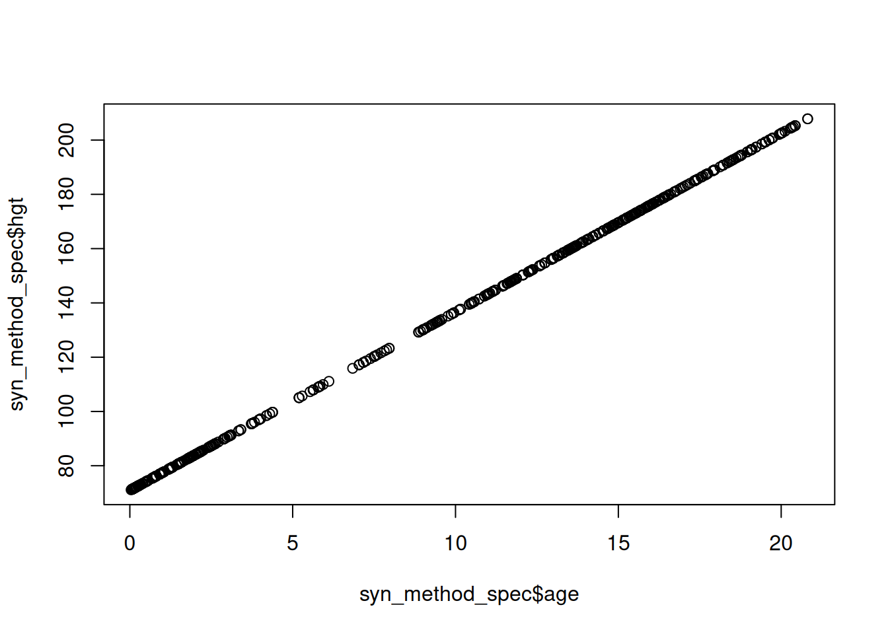

Show code: Loading required packages
library(synthpop)
library(densityratio)
R using synthpopNow that we understand the concept of synthetic data and know about the dangers and potential, it is time to actually generate synthetic data in R. Throughout, we will use the synthpop package (Nowok, Raab, and Dibben 2016), which is a powerful tool explicitly designed to generate synthetic data. Other alternatives to create synthetic data are, for example, the R-package mice (van Buuren and Groothuis-Oudshoorn 2011; Volker and Vink 2021) or the stand-alone software IVEware (Raghunathan, Solenberger, and Van Hoewyk 2002). Additionally, we will use the additional package densityratio (Volker, Gonzalez Poses, and van Kesteren 2024) to evaluate the utility of synthetic data.
Make sure to load all of the required packages, and in case you haven’t installed them already, install them first, using install.packages("package_name").
1. Load the R-packages synthpop and densityratio using library().
library(synthpop)
library(densityratio)Throughout the practical, we will continue with the boys data from the mice package that we also used in the previous section. Note that you cannot simply load the data from the mice package, because the missing values are imputed to simplify the practical. You can download the data as follows:
data <- readRDS(
url("https://github.com/lmu-osc/synthetic-data-tutorial/raw/refs/heads/main/data/boys.RDS")
)The boys data contains measurements on 9 variables on 748 Dutch boys. The variables in the data are described in the block below.
boys data
age: Decimal age (0-21 years)hgt: Height (cm)wgt: Weight (kg)bmi: Body mass indexhc: Head circumference (cm)gen: Genital Tanner stage (G1-G5)phb: Pubic hair (Tanner P1-P6)tv: Testicular volume (ml)reg: Region (north, east, west, south, city)Normally, this step would be redundant, as you probably analyzed the data of interest already and know all the ins and outs. However, if the boys data is new for you, it is helpful to invest some time in getting to know the data you will be working with. When creating synthetic data, it eases the modelling procedure when you know what variables there are in the data, and which kinds of relationships you can expect.
2. Inspect the first few rows of the data using head().
head(data)3. Use the summary() function to get an overview of the data.
summary(data)You may notice a couple of things. First, the data seems to be sorted on age. You may verify this by running !is.unsorted(data$age). Second, you may notice that most variables are non-negative, which might be something you want to take into account when modelling the data (but perhaps, this is not so relevant for the analysis at hand; for now, we assume it is). Third, you may notice that the variables hgt, wgt and bmi yield a deterministic system when considered simultaneously. That is, the values for bmi should be consistent with the respective values of hgt and wgt. This is also we want to take into account when modelling the data. Finally, the data consists of a mix of continuous and categorical variables, which allows to model variables of both types.
Throughout the tutorial, we create data using fully conditional specification, which is implemented in the synthpop package. The most important function in the package is syn(). The syn() function takes a dataset, estimates a set of conditional models, and draws synthetic data from these models. The other arguments allow to specify various modelling choices, for example which model to use for which variable, which set of predictor variables to use for modelling each synthetic variable, whether there are particular constraints that need to be taken into account, and so on.
Some of the most important arguments of the syn() function are the following (you can use ?synthpop::syn() for a more exaustive list). The syn() function will take these modelling choices into account when modelling each synthetic variable, and the resulting synthetic data, called syn in the output list, adheres to these specifications.
methodEither a single character string with a synthesis model that is applied to all variables, or a character vector with a synthesis model per variable. The default method is use classification and regression trees (for an introduction, see, for instance, Section 8.1 in James et al. 2023) for all variables, which is a flexible, non-parametric technique for modelling synthetic data. Other synthesis models that are available are listed below (for a more thorough explanation, see ?synthpop::syn.METHOD, with METHOD replaced by the actual method as specified below).
Methods for continuous variables
bag: bagging.cart: classification and regression trees.norm: linear regression.sqrtnorm: linear regression on the square root of the outcome variable.cubertnorm: linear regression on the cubic root of the outcome variable.lognorm: linear regression on the natural logarithm of the outcome.variable.normrank: linear regression on normal quantiles of the ranks of the outcome, new values are drawn by matching synthetic ranks with observed ranks, and drawing synthetic values corresponding to the observed ranks.pmm: predictive mean matching.ranger: random forests using the ranger package.rf: random forests using the randomForest package.sample: random sampling with replacement from the observed data.Methods for categorical data
satcat: Generates a variable from all possible combination of its predictors using sampling (so only combinations with observed values can be synthesized).catall: Extends satcat, by drawing generating all categorical variables simultaneously from a multinomial distribution. This allows to generate synthetic values for combinations of cells that are not in the observed data, and to specify structural zeros (i.e., combinations of cells that are impossible). The multinomial model is actually a joint model for the categorical variables. The continuous variables can then be modelled using the fully conditional specification approach (this only works when first using joint modelling, and then modelling the remainder using fully conditional specification).ipf: Iterative proportional fitting with additional noise to yield better privacy guarantees (satisfies differential privacy, for a non-technical introduction on this, see Desfontaines 2023).logreg: logistic regression.polr: ordered polytomous regression (logistic regression with an outcome with \(> 2\) categories).polyreg: unordered polytomous regression.nested: synthesizes a variable that is nested in the categories of another variable.cart pmm, ranger, rf and sample are all also available for categorical variables.Methods for survival data
survctree: generates synthetic survival data using classification and regression trees.default.methodA string of length four with a user-specified default method for (1) continuous variables, (2) categorical variables with 2 levels, (3) ordered categorical variables with more than 2 levels, and (4) unordered categorical variables with more than 2 levels. Note that this default.method is only used when method = "parametric", or when there is a mismatch between the synthesis method and the variable type.
visit.sequenceDetermines the order in which the variables are synthesized. While in theory this order is not supposed to matter much, in practice it can make a difference in some cases. Raab, Nowok, and Dibben (2017) state that if there exist a subset of variables which relationships are most important, it is often beneficial to synthesize these first. Variables with many categories are typically hard to synthesize, and may yield an unfeasible number of parameters for models of later synthesized variables, so you might consider synthesizing these at the final stages.
predictor.matrixYou might want to exclude some variables as predictor for subsequent variables. This can be helpful if you know there are no relationships between some of the variables, or if you want to include an ID variable in the synthetic data, but not use this as a predictor of subsequent variables.
kThe number of synthetic records that will be generated. You can generate more or less observations than in the observed data, but note that the information in the synthetic samples cannot exceed the information in the observed data.
rules and rvaluesThe rules argument expects a named list that contains rules for restricted values. These restricted values are determined by values of other variables: for example, monthly income should be zero for children who are too young to have a paid job (in the Netherlands, the age limit is 12 years). The rvalues argument expects a named list, but with the values to attach to those observations who adhere to the rules specified in rules. So, if you want to specify that every boy with genital tanner stage “G1” has pubic hair tanner stage “P1”, you can set
rules = list(phb = "gen == 'G1'")
rvalues = list(phb = 1)semicontSome variables might have a point mass for some values. For example, income variables often have a spike at 0 for people who don’t have a paid job. This point mass can be modelled separately by first predicting whether an observation has either a zero or non-zero value, and subsequently modelling the income values for those observations with a non-zero value.
smoothingSome imputation methods for continuous variables sample the synthetic values from the observed variable. Since re-using observed values may worsen privacy risks, smoothing can be applied such that there is additional randomness in the values that end up in the synthetic data. The smoothing argument expects a character string with the smoothing method per variable.
We will first create synthetic data with a relatively simple, parametric, synthesis model. To this end, we need to decide on a parametric model to synthesize each variable, which can be done my specifying method = "parametric" in the call to syn(). This implies that continuous variables are synthesized using a linear model that preserves the marginal distribution even in the case of non-normality. Specifically, normrank first transforms the observed data to standard normal quantiles based on the relative ranks of the values. Subsequently, a linear regression model is fitted on these quantiles using all predictors that were synthesized previously. Finally, synthetic values are drawn from the observed data by backtransforming the synthetic quantiles to ranks, and matching the ranks with the observed data. Categorical variables with two categories are synthesized with a logistic regression model and categorical variables with more than two categories are synthesized using ordered or unordered polytomous regression (which is an extension to logistic regression for more than two categories), depending on whether the categories are ordered or not, respectively.
4. Use synthpop() to create a synthetic data set in an object called syn_param using method = "parametric". Use seed = 123 if you want to replicate our results.
syn_param <- syn(
data = data,
method = "parametric",
seed = 123,
print.flag = FALSE
)5. Inspect the syn_param object, what do you see?
syn_param
# Calling syn_param shows you some important features of the synthesis
# procedure. First, it shows the number of synthetic data sets that were
# generated (syn_param$m). Also, it shows for every variable the method
# that was used to synthesize the data (syn_param$method). If you want to
# know more about a specific synthesis method, for example, logreg, you
# can call ?syn.logreg to get more information.If all is well, all continuous variables are strictly positive, which is due to matching the synthetic ranks with observed ranks and sampling the corresponding values from this (as explained above). However, there is a problem that you might have noticed. The variable bmi is not equal to wgt / (hgt/100)^2. This issue can be fixed using passive synthesis.
In synthpop, the synthesis method can be altered using the method argument. The method-vector is a vector that contains, for every variable, the imputation method or passive imputation equation with which this variable should be imputed. We can obtain the method-vector that we previously specified implicitly by extracting it from the syn_param object.
method <- syn_param$method
method age hgt wgt bmi hc gen phb
"sample" "normrank" "normrank" "normrank" "normrank" "polr" "polr"
tv reg
"normrank" "polyreg" We can alter the synthesis model for any variable by changing the corresponding element in this vector. For passive imputation, we can define a function using ~I(equation). For bmi, this entails the following.
method["bmi"] <- "~I(wgt/(hgt/100)^2)"
method age hgt wgt
"sample" "normrank" "normrank"
bmi hc gen
"~I(wgt/(hgt/100)^2)" "normrank" "polr"
phb tv reg
"polr" "normrank" "polyreg" With this specification, synthpop knows that it should not use an imputation model, but rather use the synthetic hgt and wgt values to construct the bmi values deterministically.
6. Use synthpop() to create a synthetic data set in an object called syn_passive using the adjusted method vector. Again, use seed = 123 if you want to replicate our results. Inspect the output.
syn_passive <- syn(
data = data,
method = method,
seed = 123,
print = FALSE
)
Variable(s) bmi with passive synthesis: relationship does not hold in data.
Total of 723 case(s) where predictors do not give value present in data.
You might want to recompute the variable(s) in the original data.The printed message signals that synthpop detects that the specified relationship does not hold in the real data. This is not really something to worry about: it is due to rounding errors in bmi.
syn_passiveThe bmi values correspond to the synthetic hgt and wgt values, as we wanted. Using this approach, you can also specify different synthesis methods in general, for example to synthesize some of the variables with a random forest model, or to transform some of the variables before synthesizing them. There are too many possibilities to cover in this practical, but the synthpop package contains extensive documentation on the possibilities (see, for instance, ?synthpop::syn and vignette("synthpop", "synthpop")).
synthpopSynthpop comes with an extensive suite of functionality for generating synthetic data, that already allow for a wide range of applications. It can, however, occur that you want models that are not yet incorporated. In synthpop, it is possible to write custom synthesis functions that extend the existing suite of methods. Leaving the nitty-gritty aside, we can write a synthesis function that starts with syn. and then some name, that takes arguments y (the observed variable to be synthesized), x (the predictors in the observed data), xp (the previously synthesized predictor variables) and additional parameters for the model at hand (in our case, there aren’t any). Then, we need to fit the model on the observed data, x and y, and from this model draw new observations from the synthetic predictors, xp. This is illustrated below with a regression model, where all synthetic values lie exactly on the regression line (this is a very stupid idea, but it allows to display the procedure in a straightforward manner). The output of the synthetic data function should be a list with arguments res, the synthetic data values, and fit, the parameters of the fitted model. Note here that you don’t accidentally leak the observed data!
syn.synthesis_function <- function(y, x, xp, ...) {
new_y <- as.matrix(y) # variable to be synthesized
new_x <- as.matrix(x) # observed predictor variables
new_xp <- cbind(1, as.matrix(xp)) # previously synthesized variables
fit <- lm(new_y~new_x) # fitted model
return(
list(
res = new_xp %*% coef(fit), # synthetic values
fit = coef(fit)
)
)
}
method["hgt"] <- "synthesis_function"
syn_method_spec <- syn(
data = data,
method = method,
seed = 123,
print = FALSE
)$syn
Variable(s) bmi with passive synthesis: relationship does not hold in data.
Total of 723 case(s) where predictors do not give value present in data.
You might want to recompute the variable(s) in the original data.plot(syn_method_spec$age, syn_method_spec$hgt)
Using this procedure, you can combine modelling functions that are self-written or stem from alternative packages with the synthesis procedure in synthpop. This also allows to model, for example, a hierarchical structure, using the R-package lme4 (lme4?), glmmTMB (glmmTMB?) or, if you prefer a Bayesian procedure, with brms (brms?). In such instances, one can incorporate the hierarchical structure replacing the single level models with their hierarchical counterparts from these packages. Since no one has done this for synthetic data yet, relevant resources do not seem to exist, but feel free to reach out if you plan on doing this. To read more about modelling hierarchical data in the context of imputation for missing data, see Yucel et al. (2017); Speidel, Drechsler, and Jolani (2020)].
The exercises here showed that synthpop allows quite some flexibility when modelling synthetic data, and simplifies the process substantially. However, further refinements might sometimes be possible. In the subsequent section, we will discuss how to evaluate the quality of the synthetic data at hand, from both a privacy and utility perspective.